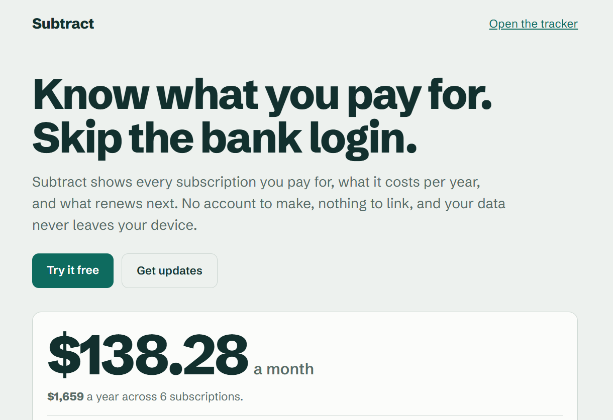
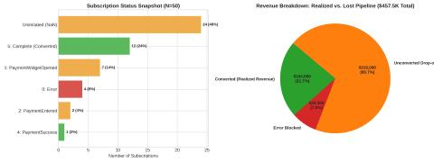
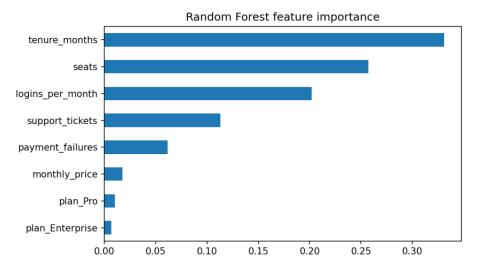
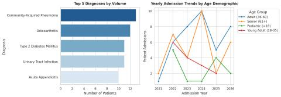
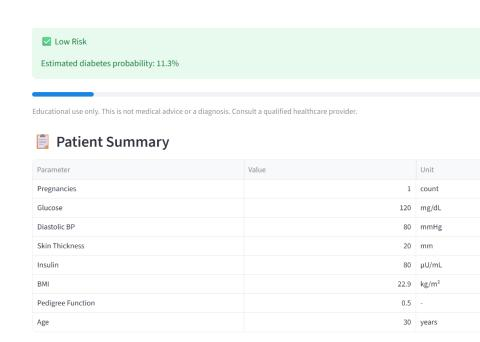
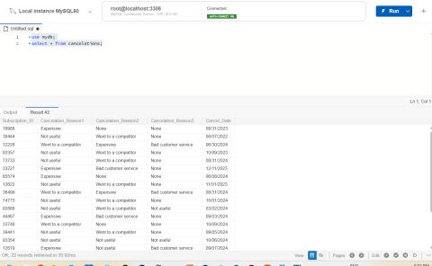

My Projects

Subtract
A free subscription tracker with no bank linking and no account to create. It shows every subscription, what it costs per year, and what renews next.
View Project Live Indie Hackers
Payment Funnel Analysis: SaaS Fintech
This project analyzes payment funnel dynamics and checkout friction for enterprise B2B SaaS subscriptions. By evaluating payment status logs (payment_status_log) and customer subscription records, the analysis found that only 24.0% of subscriptions successfully convert to paid status, leaving $353,500 (77.3% of total pipeline revenue) uncollected.
View Project
SaaS Churn Prediction
A machine learning project that predicts which SaaS subscribers are likely to cancel, comparing three classification models and saving the best one for reuse.
View Project
Healthcare Analytics
This project provides an end-to-end data pipeline and analytical suite for a synthetic healthcare dataset (synthetic_healthcare_dataset.csv). Built for execution within a Hex workspace, it covers data cleaning, deduplication, schema standardization, and SQL/Python analytical queries targeting key stakeholder metrics.
View Project
Diabetes Prediction System
A machine learning web app that estimates diabetes risk from patient health metrics. Built with Streamlit and a Random Forest pipeline trained on the Pima Indians Diabetes dataset (768 patients). On a stratified 80/20 hold-out split: 74.7% accuracy, 66.7% recall.
View Project Live
Subscription Data Cleaning Analysis Project
This project involved setting up a local MySQL database, importing nine raw CSV datasets related to a subscription business (customers, products, subscriptions, payments, cancellations, and frontend events), cleaning and standardizing the data, and preparing it for relational analysis.
View Project